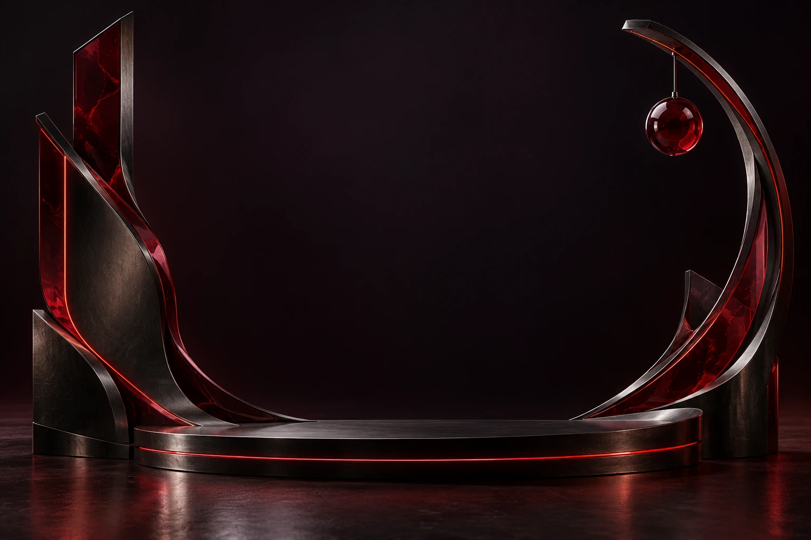
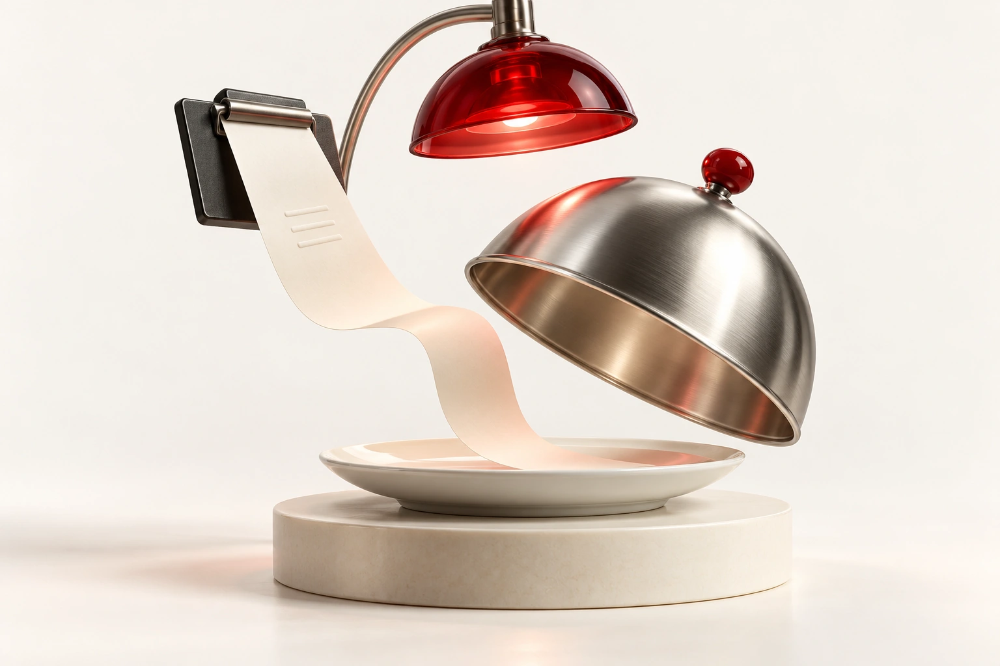
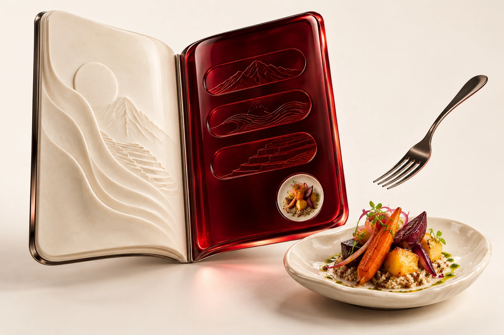
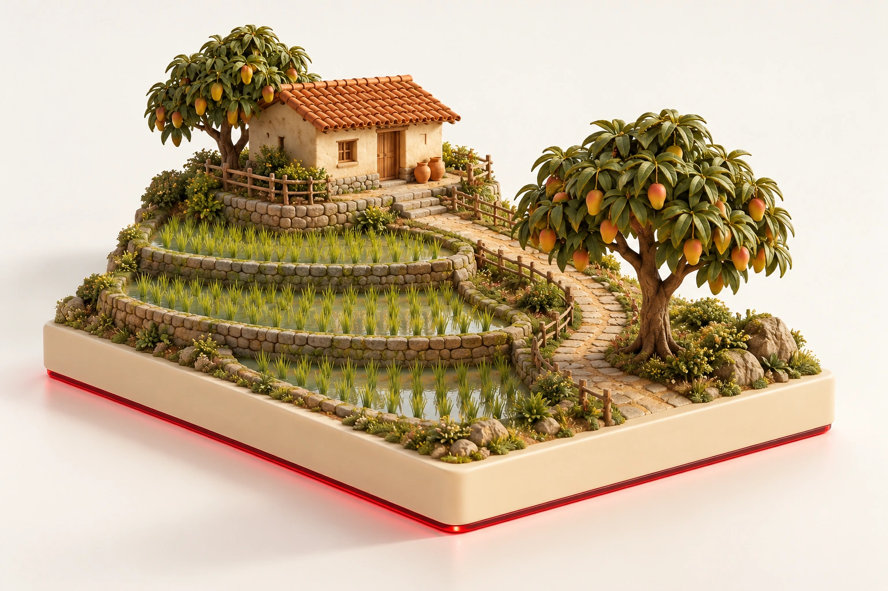

CASE / 01INTERACCIÓN DISPONIBLE
E-commerce / Proyecto personal
Product Frank
Una tienda que pone el catálogo y el pedido en el mismo recorrido.
DESARROLLO WEB & SOFTWARE
Ideas claras.
Experiencias que funcionan.
Diseño páginas web y desarrollo proyectos de software con atención a la experiencia de uso. Estudiante de Ingeniería de Sistemas e Informática en la UTP, desde Chiclayo.

Tecnología con identidad propia.
Una selección de proyectos personales, ejercicios académicos y prototipos. Cada caso explica el problema, la propuesta y su estado actual.
E-commerce / Proyecto personal
Una tienda que pone el catálogo y el pedido en el mismo recorrido.


Web móvil / Demostración
Abrir la carta debería ser tan fácil como sentarse a la mesa.


Seis proyectos, seis ideas. Las portadas son ilustraciones conceptuales 3D. Cada caso explica el alcance real; las demos usan datos de ejemplo.
Cambia de vista para ver una propuesta de cada interfaz. Cada caso explica el estado y alcance del proyecto.
Abrir el primer caso ↗Propuestas visuales de interfaz · explora el caso para conocer su alcance.
1 × Chicha morada
Sin cebolla · Para servir2 × Limonada
1 × Refresco
En preparación¿Con qué empezamos hoy?
No todo empieza frente a una pantalla. La atención al público, las operaciones y la gestión de información también forman parte de mi manera de trabajar.
Conocer mi perfil completo ↗Desarrollo web · Software · Soporte TI
Ver currículum completo ↗TRAYECTORIA
Asistente
Elaboración de reportes técnicos, gestión documental, atención al público y soporte TI básico.
Programador en tienda
Trabajé como programador en una tienda y realicé trabajos de publicidad.
Servicio y operaciones
Atención presencial, apoyo logístico y coordinación de actividades operativas.
HTML · CSS · JavaScript
Java · Kotlin · Python · SQL
Git · VS Code · Android Studio
Podemos empezar por una web para tu negocio, una herramienta para tu trabajo o el equipo que necesitas recuperar.
Landing pages, portafolios, webs de negocio y cartas digitales. Diseño adaptable a celular y computadora.
Prototipos, herramientas de gestión y tareas que pueden resolverse con una aplicación.
Diagnóstico, mantenimiento y soporte técnico. Revisamos el problema y coordinamos la solución.
Entiendo lo que necesitas y el contexto.
Acordamos alcance, plazos y presupuesto.
Revisamos avances y afinamos los detalles.
Formación, experiencia y herramientas en un solo lugar.
Prácticas, puestos junior en tecnología y proyectos independientes de desarrollo web, software y soporte TI.
Conversamos sobre el objetivo, las funciones, el contenido y el plazo. Con ese alcance definido, coordinamos un presupuesto antes de empezar.
Hay proyectos académicos, conceptos y prototipos en desarrollo. Cada caso indica su estado y explica lo que muestra la demo.
En Chiclayo, Lambayeque, Perú. Podemos coordinar por WhatsApp tanto proyectos remotos como atención presencial según el servicio.
¿Un proyecto en mente o una oportunidad en tu equipo? Cuéntame un poco y vemos cómo puedo aportar.
+51 925 096 515 ↗CHICLAYO, LAMBAYEQUE · PERÚ